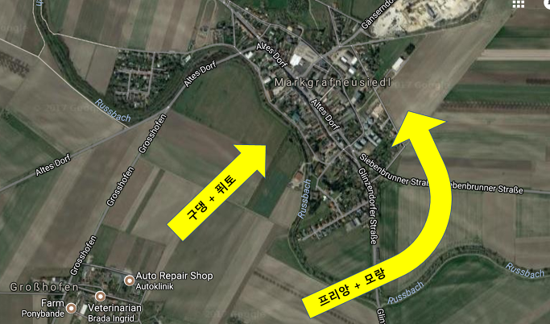
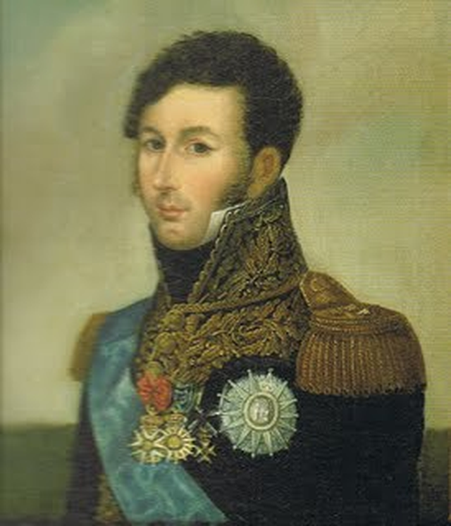
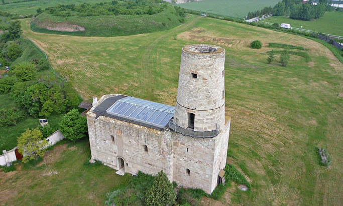
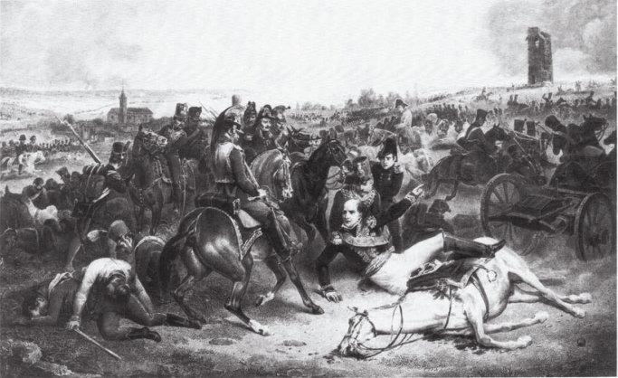
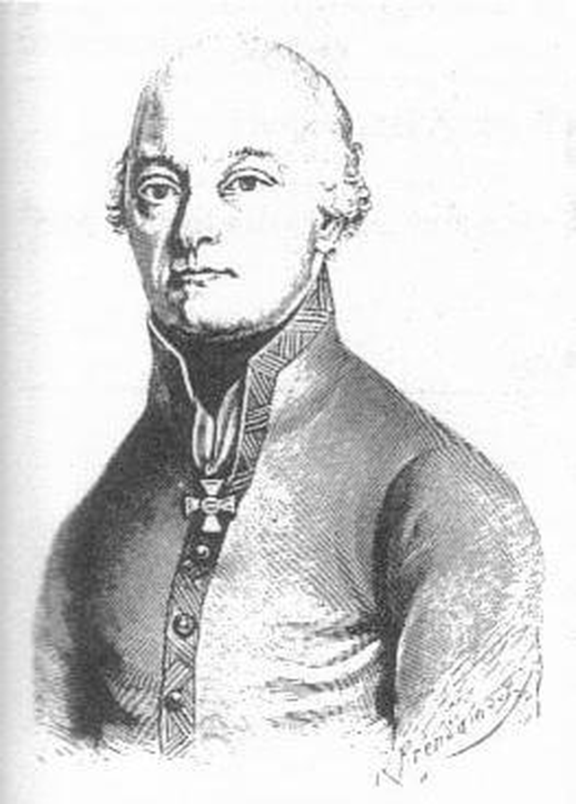

바그람 전투 (제 14편) - 마르크그라프노이지들의 탑
게시: 2017-09-17T01:42:31+09:00
양측의 모든 장군들이 다 마찬가지였겠습니다만, 프랑스군의 맨 오른쪽을 담당한 다부(Louis-Nicolas Davout)도 새벽부터 바빴습니다. 사실 바그람 전투 두번째 날 스타트를 끊은 것은 로젠베르크 대공이 이끄는 오스트리아 제4 군단이 다부의 프랑스군 제 3군단을 습격한 사건이었지요. 이 공격은 이미 공격에 나설 준비를 해놓았던 다부에 의해 즉각 격퇴되기는 했습니다만, 나폴레옹이 현장에 달려오는 등 일대 소란을 일으켰습니다.
왜 나폴레옹은 중앙을 버려두고 맨 동쪽 현장에 직접 달려갔을까요 ? 당시 39세로서 프랑스군 원수 중에서는 가장 어렸던 다부가 못 미더워서였을까요 ? 당연히 그렇지 않았습니다. 다부에 대해서 나폴레옹은 그 능력에 있어서나 충성심에 있어서나 최고의 믿음을 가지고 있었습니다. 나폴레옹은 새벽의 그 소동이, 혹시 요한 대공의 군대가 멀리서 당도한 것인지 걱정했던 것입니다. 나폴레옹은 카알 대공이 루스바흐(Russbach) 고원의 지형적 우위를 버리고 평원으로 내려와 감히 선제 공격을 해오리라고는 생각을 못 했지요.
나폴레옹에게 있어서 이번 전투의 승패는 바로 다부의 제3 군단의 활약에 달려 있었습니다. 오스트리아군의 방어선은 완만한 반원형으로 굽은, 동서로 길게 뻗은 고지의 능선을 따라 배치되어 있었습니다. 이런 진형 때문에 프랑스군이 평야 저지대로부터 정면으로 달려든다면 매우 어려운 싸움이 될 수 밖에 없었으나, 나폴레옹은 그를 역이용하려 한 것이 바그람 전투의 핵심이었습니다. 평야에 배치된 프랑스 군단들이 모루 역할을 하는 동안, 망치 역할을 하며 오스트리아군을 측면에서 납작하게 때리는 역할을 할 것이 다부의 군단이었습니다. 원래 계획대로라면 다부가 먼저 로젠베르크를 공격하여 오스트리아군이 포진한 루스바흐 고원의 동쪽 끝에 올라선 다음, 거기서부터 김밥 말듯 오스트리아군을 돌돌 말아올려야 했거든요.
이 작전이 성공적으로 이루어지자면 두가지 전제 조건이 충족되어야 했습니다. 먼저, 저 멀리 프레스부르크에서 오고 있다는 요한 대공의 군대가 제때 나타나지 않아야 했습니다. 그에 대해서 나폴레옹은 꽤 자신이 있었습니다. 그쪽에 배치해둔 정찰 병력이, 요한 대공이 아직 움직이지 않고 있다는 것을 알려왔거든요. 둘째 조건은 다부의 측면 공격이 기습적으로 이루어져야 한다는 것이었습니다. 길게 늘어선 오스트리아군 전선의 측면을 찔러, 분산된 적군을 조금씩 분쇄하며 전진하는 것이 승리의 요소였는데, 만약 적군이 나폴레옹의 작전을 눈치채고 동쪽 고지에 대규모 증원군을 파견한다면 아무리 다부라고 해도 쉬운 승리가 어려웠기 때문이었습니다.
그런데 새벽에 벌어진 로젠베르크의 선제 공격으로 인해 기습의 요소가 망가져버리자, 나폴레옹은 전체 작전이 흔들릴까 걱정을 하게 되었습니다. 그는 오스트리아군이 물러가 또아리를 튼 마르크그라프노이지들(Markgrafneusiedl) 마을 주변의 지형을 살펴본 뒤, 기습이라는 잇점이 사라진 것을 보충하기 위해 새로운 명령을 다부에게 하달했습니다. 즉, 공세를 두갈래로 나누어, 마르크그라프노이지들의 정면과 함께 측면으로도 공격하라는 것이었습니다. 이는 그가 둘러본 그 일대 지형 특성 때문이었습니다. 프랑스군이 바라보고 있는 마르크그라프노이지들 마을의 남서쪽면은 꽤 급한 경사면으로 되어 있어 공격이 쉽지 않았습니다. 그러나 그 동쪽 측면은 매우 완만한 경사로 되어 있어 진격이 꽤 수월해보였던 것입니다. 다만, 그 동쪽 측면으로부터 공격을 하기 위해서는 먼저 병력을 루스바흐(Russbach) 개천 너머로 이동시켜야 했는데, 대포를 개천 너머로 이동시키기 위해서는 임시 가교를 놓는 등 꽤 시간이 걸릴 수 밖에 없었습니다. 하지만 이미 기습의 요건이 사라진 이상, 시간이 걸리더라도 그렇게 하는 것이 낫겠다고 나폴레옹은 판단했던 것입니다.

(현대의 마르크그라프노이지들의 항공 사진에 당시 다부의 공격 방향을 표시한 것입니다. 루스바흐 개천의 모습은 아마 당시와는 많이 달라졌을 것입니다.)
공격 개시 시간이 2~3시간 늦어지더라도, 어차피 처음부터 승패는 결정된 것이나 다름없었습니다. 다부의 제3 군단은 프랑스 군단들 중 그야말로 최강의 군단이었습니다. 원래대로라면 프랑스군의 각 군단은 4개 보병 사단에 포병 연대와 기병 연대까지 합해서 약 2~3만 정도의 병력을 갖추어야 했습니다. 그러나 그건 어디까지나 서류상의 편제였고, 실제로는 전투에 나설 때 2만을 넘는 경우가 그리 많지 않았습니다. 가령 베르나도트의 제9 군단은 1만7천 정도의 병력만 갖추고 있었고, 달마시아(Dalmatia) 방면군으로 형성된 마르몽(Marmont)의 제11 군단은 1만에 불과했습니다. 주요 지휘관이 거느린 군단은 규모가 좀더 컸습니다. 나폴레옹이 새벽부터 아스페른부터 아더클라까지의 약 8km를 오르락내리락하게 만들며 조자룡 헌창 쓰듯 부려먹은 마세나의 제4 군단도 2만8천의 병력에 86문의 대포를 갖춘 강력한 군단이었습니다. 그러나 나폴레옹이 다부의 손에 쥐어준 제3 군단은 무려 3만8천의 병력에 120문의 대포를 가진 진짜 전쟁 기계였습니다. 그에 비해 로젠베르크가 거느린 오스트리아 제4 군단은 1만9천의 병력에 60문의 대포 뿐이었고, 전날 합류한 노르드만(Nordmann) 장군의 전위대 잔존 세력 6천을 합해도 다부의 제3 군단에는 턱없이 부족한 병력과 화력이었습니다. 그것만으로도 안심이 안되었는지, 나폴레옹은 새벽에 달려온 지원 병력 중 원래 기병 예비군단 소속이던 아리기(Jean-Toussaint Arrighi de Casanova) 장군의 흉갑기병 사단 약 2천을 다부에게 붙여 주었습니다. 애초에 로젠베르크가 이길 수 있는 방법은 없었습니다.

(아리기 장군은 나폴레옹과 같은 코르시카 출신으로서 나폴레옹의 조카사위 뻘 되는 사람이었습니다. 덕분에 초기부터 나폴레옹 휘하에서 복무했습니다. 그는 이 전투 뒤에 '다부가 자신의 흉갑기병 부대를 터무니없는 지형 속에 쳐넣는 바람에 큰 피해를 입었다'면서 쪼르르 나폴레옹에게 쫓아가 일러바치는 모습을 보여주었습니다. 그런데 다부가 아리기의 부대를 부적절한 지형에 투입한 것은 맞는 말이긴 했습니다.)
다부의 공격은 오전 10시 경부터 시작되었습니다. 다부는 나폴레옹이 명령한 대로 병력과 대포를 반으로 나눠 정면, 즉 그로스호펜(Grosshofen) 쪽으로부터는 구댕(Gudin)과 퓌토(Puthod) 사단을 진격시켰고, 동쪽 측면으로부터는 미리 동쪽에서 루스바흐 개천을 건너 위치를 잡은 프리앙(Friant)과 모랑(Morand) 사단이 진격했습니다. 그럼에도 불구하고 공격은 나폴레옹 머리 속에서처럼 순조롭게 진행되지만은 않았습니다. 일단 프리앙과 모랑의 사단들이 측면을 우회하느라 이동하는 모습을 로젠베르크는 훤히 내려다보고 있었거든요. 확실히 고지를 점거한 측이 전투 현장에서의 정보 파악에 있어 압도적인 우위에 있었습니다. 더군다나 마르크그라프노이지들 마을에는 랜드마크 격인 꽤 높은 탑이 있었기 때문에 프랑스군의 움직임이 모두 훤히 보였습니다. 당연히 정면으로 도전해온 구댕과 퓌토은 물론, 측면으로 들어온 프리앙과 모랑 모두가 오스트리아군의 강력한 저항에 부딪혔습니다.

(지금도 서있는 마르크그라프노이지들의 탑입니다. 교회는 아니고... 무슨 목적의 탑인지 못 찾아봤습니다.)
하지만 사기만 충천할 뿐 모든 면에서 불리했던 오스트리아군은 결국 프랑스군의 상대가 되지 못했습니다. 특히 포병대와 기병대의 전력에 있어서 오스트리아군은 전혀 상대가 되지 않았습니다. 일단 새벽에 있었던 오스트리아군의 선제 공격으로 벌어진 전투에서, 오스트리아군의 포병대는 훨씬 숙련되었을 뿐만 아니라 숫자도 훨씬 많았던 프랑스군의 포병대에게 집중 공격을 받고 이미 많은 수의 대포를 파괴당한 상태였습니다. 압도적인 프랑스 포병대가 우박처럼 쏘아대는 포탄과 폭발탄에 마르크그라프노이지들 마을은 곧 화염과 연기에 휩싸였습니다. 전진해오는 프랑스군 보병들을 저지하기 위해서 오스트리아군 기병대가 뛰어나와 위협을 가했으나, 이들도 훨씬 더 우세한 프랑스군 기병대에 곧 제압되었습니다. 특히 1805년 아우스테를리츠의 패전 이후 많은 군마를 나폴레옹에게 몰수당한 뒤 기병 양성에 애로사항이 많았던 오스트리아군 기병대는 집단 기동에 무척이나 미숙했습니다. 로젠베르크에게 배속된 오스트리아 기병대도 숫자는 적지 않았습니다. 긴 횡대 진형의 끝 부분을 맡고 있는 로젠베르크 군단의 중요성과 취약성을 잘 알고 있던 카알 대공이 무려 5200명의 기병대를 배치해 주었던 것입니다. 다부가 거느린 약 8000의 기병대와 겨루어 볼만한 규모였습니다. 그러나 중대(squad) 단위의 전술 정도만 익혔던 오스트리아 기병대는 프랑스군 기병대처럼 연대 단위가 한덩어리로 돌격과 선회를 자유자재로 하는 적수 앞에서는 맥을 추지 못했습니다. 오스트리아 기병대는 의미없는 소규모 돌격을 거듭하다 소모되고 말았습니다.

(마르크그라프노이지들의 탑이 보이는 곳에서 진두 지휘를 하다가 타고 있던 말이 적탄에 쓰러지는 바람에 함께 쓰러진 다부의 모습입니다. 이건 봉변이 아니라 상당한 명예였습니다. 당시 장군들은 전투에서 용감하게 최전선에서 싸웠다는 것을 증명하는 무용담으로 '내가 탔던 말이 적탄에 맞아 쓰러졌다'라는 말을 즐겨 썼습니다. 진짜든 거짓말이든지요.)
그럼에도 불구하고 오스트리아 보병들은 정말 치열하게 저항했습니다. 당시 다부 휘하에서 이 공격에 참여했던 제7 경보병 연대의 한 병사는 적의 총탄이 빗발처럼 쏟아져 내렸으며, 자신도 전에는 한 전투에서 그렇게 많은 총탄을 쏘아댄 적이 없었으며 나중에는 머스켓 소총이 너무 뜨거워져서 더 이상 총을 쏠 수 없는 지경에 이를 정도라고 적었습니다. 하지만 프랑스 포병들에게 난도질을 당해 불타는 마을에서, 구댕+퓌토와 프리앙+모랑의 4개 사단이 양측에서 집중적으로 쏟아붓는 십자 사격 속에서 오스트리아군은 더 버티지 못했습니다. 결국 마을은 프랑스군의 손에 넘어갔습니다. 무너지려는 전선을 지탱하기 위해 최전선에서 용감하게 싸우던 전위대 사령관 노르드만(Armand von Nordmann)은 프랑스군의 총탄에 치명상을 입고 참호 속에 빠졌는데, 황급히 퇴각하는 오스트리아군은 이런 고위급 장군마저 내버려둔 채 퇴각할 정도로 상황이 좋지 않았습니다. 결국 나중에 프랑스군에 의해 발견된 노르드만은 그 날 49세의 한많은 일생을 마치게 됩니다.

(아르만 폰 노르드만입니다. 그는 원래 프랑스 귀족이었습니다. 다만 알자스 출신으로서 독일어가 모국어였지요. 그는 프랑스군에서 군 생활을 시작했고, 혁명 뒤에도 해외로 망명하지 않고 뒤무리에 장군 밑에서 복무했습니다. 그러다가 뒤무리에가 망명한 이후 결국 오스트리아로 망명하여 거기서 프랑스군과 계속 싸웠습니다. 나폴레옹은 노르드만을 말할 때마다 '그 알자스 배신자'라고 부르며 증오심을 숨기지 않았습니다.)
로젠베르크의 제4 군단은 비록 철저하게 밀리기는 했지만 완전히 무너지지는 않았습니다. 로젠베르크는 약간 서쪽으로 물러난 뒤, 다부가 더 이상 김밥말이를 하지 못하도록 서둘러 그 앞에 방어진을 구성했습니다. 마침 그때 카알 대공이 이 소식을 듣고 일부 예비대를 이끌고 황급히 달려와 가세했습니다. 그러나 딱 거기까지였습니다. 이미 고원에 성공적으로 안착한 다부의 제3 군단의 진격을 막을 수 있는 것은 없었습니다. 마을의 돌담 뒤에서도 버티지 못한 오스트리아군이, 허허벌판에 옹기종기 모여 일렬로 늘어선다고 버틸 수 있을리 없었습니다. 오스트리아군이 몸으로 쌓은 방어벽은 프랑스군의 대포알과 머스켓 총탄에 허무하게 무너져 내릴 뿐이었습니다.
이렇게 오후 1시 경 로젠베르크의 군단이 북서쪽으로 패퇴하고 그 자리를 다부의 군단이 차지하자, 상황은 나폴레옹이 바라던 모습으로 곧장 이어졌습니다. 고지 아래의 프랑스군과 대치하고 있던 호헨촐레른(Hohenzollern)의 군단의 측면이 다부의 포병대에게 그대로 노출된 것입니다. 이제 오스트리아군에게 남은 것은 나폴레옹의 구상대로 돌돌 말리는 것 밖에 없었습니다.
오스트리아군의 라데츠키(Radetzky) 장군은 마르크그라프노이지들의 탑이 프랑스군 손에 넘어가는 장면을 보면서 이미 "젠장, 이 전투는 졌구만"이라고 한탄한 바 있었습니다. 클레나우가 지휘하는 오스트리아 제6 군단이 프랑스군의 후방 아스페른과 에슬링를 공격할 때, 나폴레옹 주변의 젊은 참모 장교들은 후방에서 오스트리아군의 포성 소리가 울리는 것을 듣고 대경실색하여 나폴레옹에게 '배후를 습격당했습니다'라며 호들갑을 떨었습니다. 그러나 나폴레옹은 후방에는 별로 신경도 쓰지 않았습니다. 마세나를 보냈으니까요. 그는 계속 망원경으로 저 멀리 보이는 마르크그라프노이지들의 탑만을 보고 있었습니다. 다부의 보병들과 포병들이 뿜어내는 불꽃과 연기가 마침내 탑을 지나쳐 진격하는 순간, 나폴레옹도 라데츠키처럼 "이 전투는 이긴 것이다"라고 주변의 참모들에게 말했습니다. 이어서 그는 참모 장교들에게 명령을 내려 마세나에게 공격을 계속 하라는 명령을 전달하고, 다른 원수들에게도 일제히 전체 전선에 걸쳐 공격을 진행하도록 했습니다. 그는 특히, 막도날에게 아더클라로 진격하도록 명령을 내렸습니다. 이제 막도날에게 드디어 화려한 무대 조명이 비추어지는 순간이었습니다. 과연 막도날은 이 기회를 잘 살려냈을까요 ?
Source : The Reign of Napoleon Bonaparte by Robert Asprey
1809 Thunder On The Danube: Napoleon's Defeat of the Habsburgs by Jack Gill
With Napoleon's Guns by Jean-Nicolas-Auguste Noel
http://www.historyofwar.org/articles/battles_wagram.html
https://en.wikipedia.org/wiki/Battle_of_Wagram
http://www.napolun.com/mirror/napoleonistyka.atspace.com/Battle_of_Wagram_1809.htm